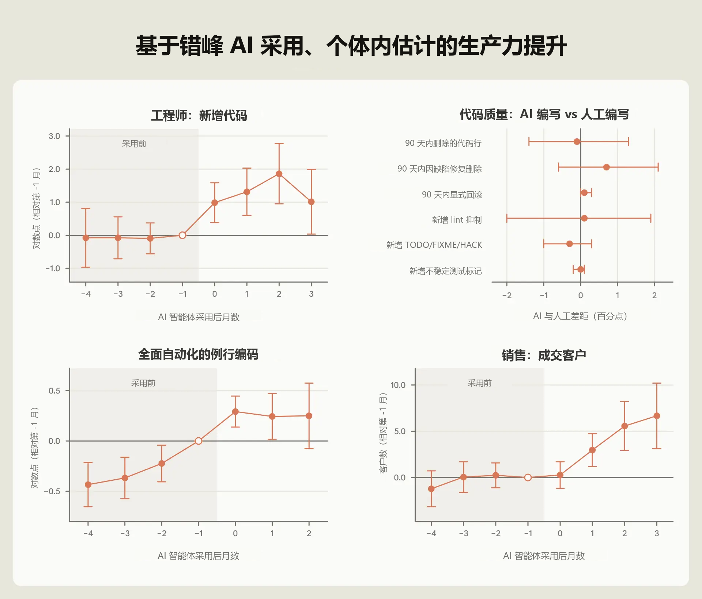
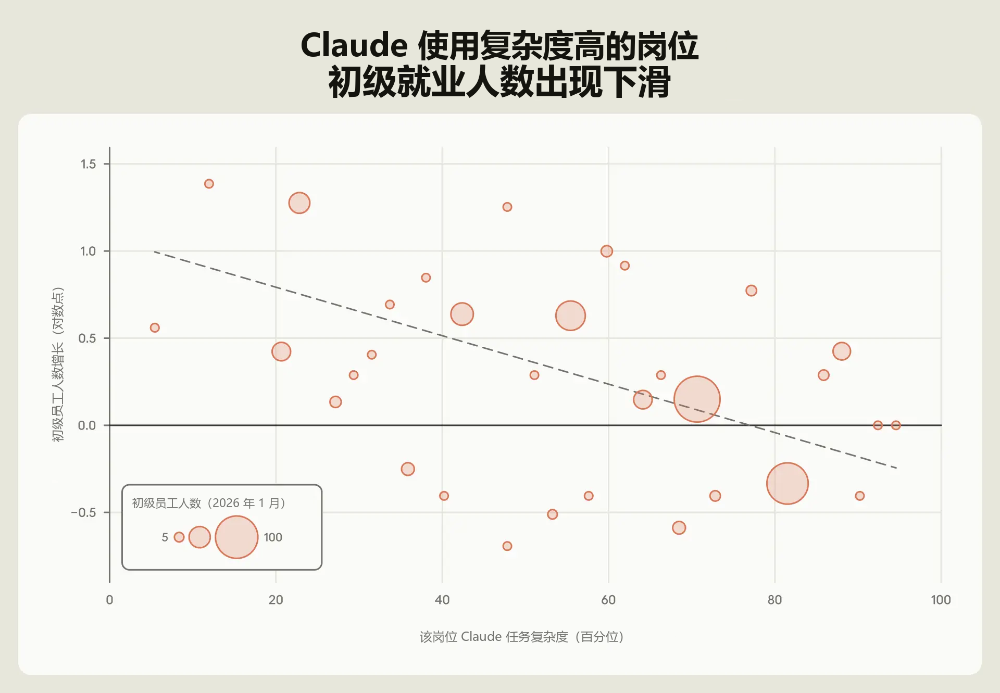
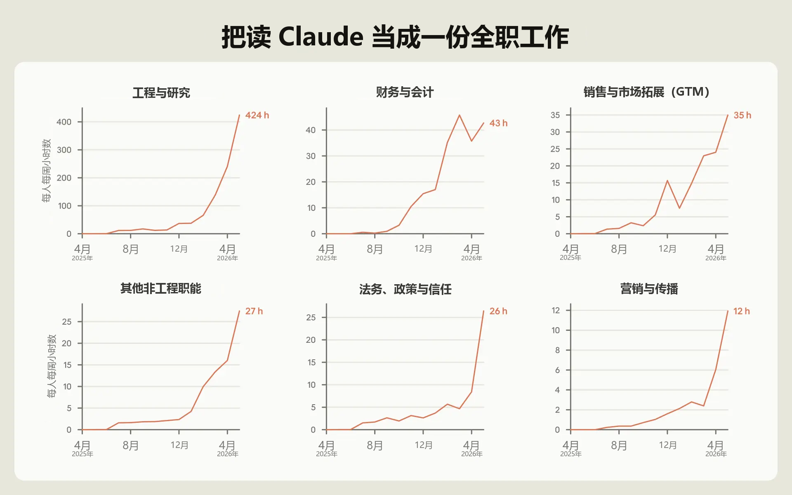
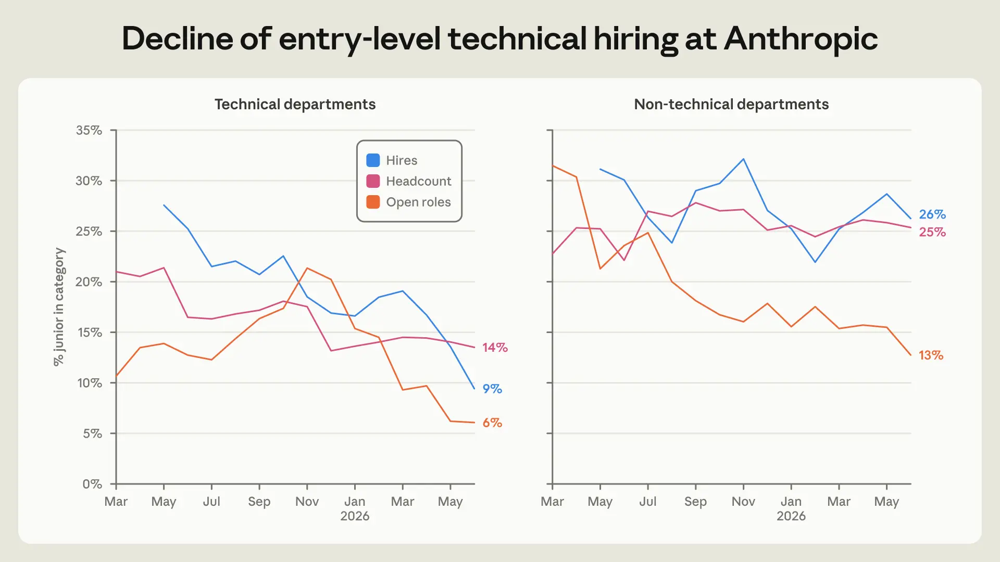
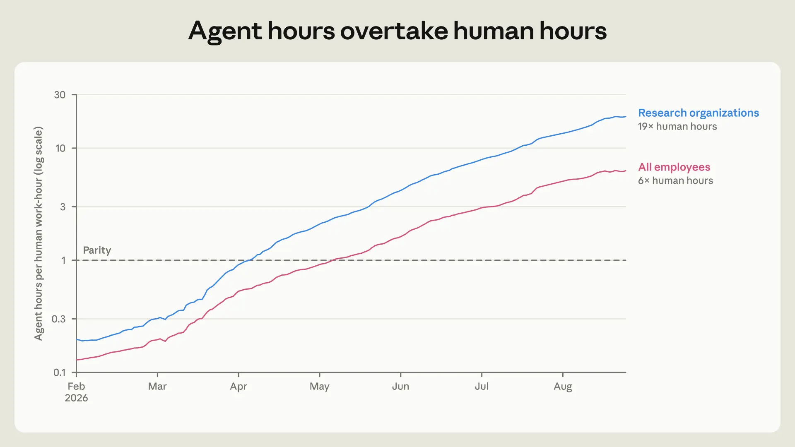
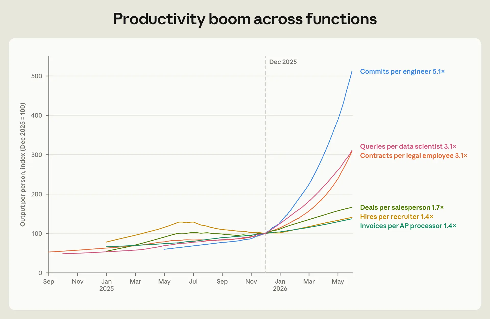
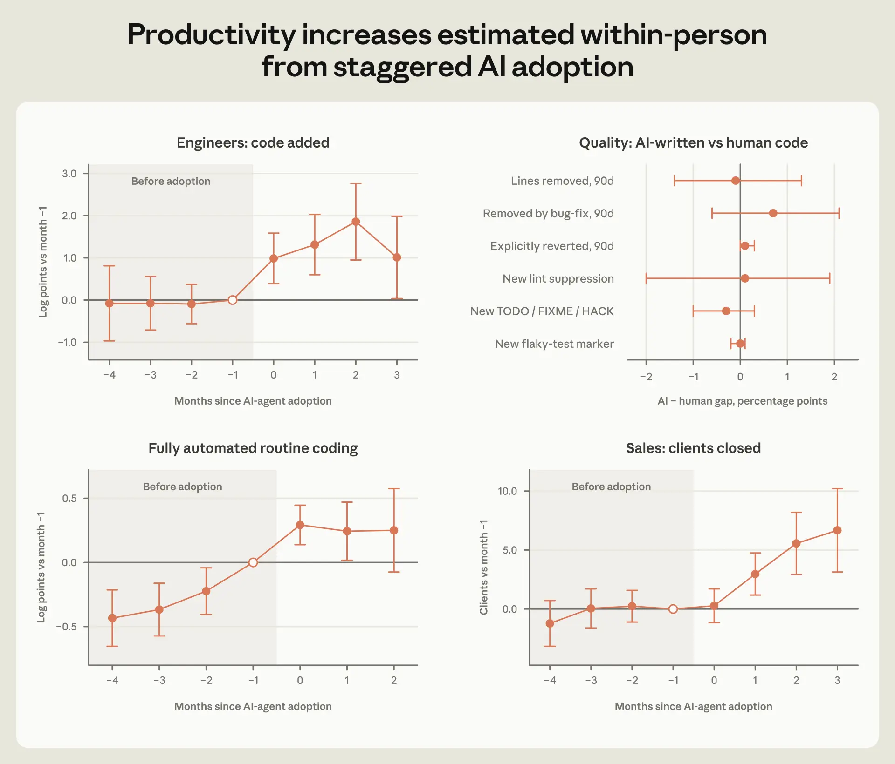
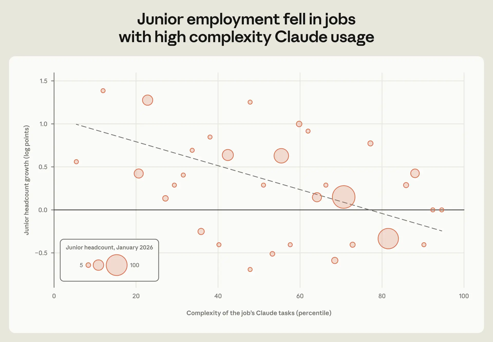
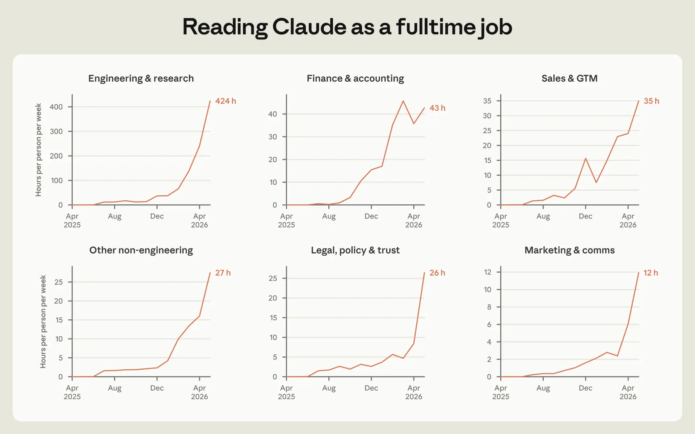
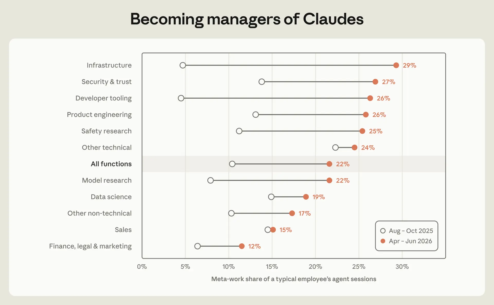

Anthropic的就业正在如何变化
📖 中文摘要
专业术语注解
元工作（meta-work）：为管理与监控智能体而搭建工具、编写规格、复核输出等关于工作的工作错峰采用估计：利用员工采用AI工具的时点差异做个体内对照，以分离AI的独立效应交互式智能体会话：由人主导、多轮往返的会话，与完全自主智能体相对重新调配：把受AI影响的员工在内部转岗到技能匹配、风险较低的岗位勉强够用自动化：AI仅略胜人类却替换人力，生产力收益微乎其微而社会成本高📄 中文全文
- 类别： 经济研究（Economic Research）
- 来源： https://www.anthropic.com/research/employment-at-anthropic
经济研究（Economic Research） 2026 年 10 月 16 日 阅读 PDF 已发布 2026 年 10 月 16 日 团队 经济学 主题
相关文章 * 经济学 2026 年 10 月 16 日 在前沿工作塑造了对未来的预期
阅读更多 Nathan Wilmers, Regina Catipon, Maxim Massenkoff, Peter McCrory AI如何重塑了Anthropic的工作与就业？作为一家处于AI应用前沿的公司，Anthropic或可成为AI将如何改变整个经济体中工作组织、招聘与劳动力需求的先行指标。
主要发现
- Anthropic招聘初级技术岗位所占的份额一直在下降。与此同时，AI智能体相对于员工的工作时长迅速扩大。到8月，交互式AI智能体的工作时长以6比1超过了员工。
- 随着AI智能体在公司内部普及，Anthropic人均产出的代码更多、每位销售达成的交易更多、处理的合同也更多。对同一名员工做跨期追踪可以发现，随着其采用新的AI工具，产出随之上升。
- 这种加速使人的注意力成为智能体产出的瓶颈。即便对非技术岗位的员工而言，读完其Claude智能体的全部输出也要花掉半个工作周。作为应对，员工转向「元工作」（meta-work），即搭建可视化工具、监控智能体流水线。
- 工作组织方式的变化也体现在招聘经理优先考量因素的转变上：相较于技术领域专长与执行落地能力，他们越来越看重自主性与判断力。
引言
在AI能力日益强大的背景下，我们应当预期工作与就业会发生怎样的转变？Anthropic值得研究，因为它已围绕AI彻底重塑了自己的工作流程。智能体穿梭于Slack聊天之中并安排会议，自主修复缺陷，协同攻克庞大的工程项目。智能体的工作时长以6比1超过人类工时。Anthropic当下正在发生的变化，为工作与就业可能的未来提供了前瞻信号。 本报告运用了Anthropic内部全面的数据，涵盖就业、AI使用、产出指标、员工调查、内部沟通模式、员工日历数据以及招聘决策记录，并以17场员工访谈为这些定量数据提供背景。 我们发现，即便公司规模在扩张，初级技术岗位的相对招聘也已放缓。工程师与非技术员工的生产力都大幅跃升，且在采用编码智能体时尤为明显。招聘经理越来越看重应聘者的自主性与判断力，而非某项具体的技术专长。在高度依赖AI的组织中工作，一个鲜明特征就是持续存在的压力：只要有可能，就要把自己从这个瓶颈位置上精简出去。一名工程师把工作形容为面对「一支Claude大军，每一个都在索要我的注意力」。Anthropic的员工依然至关重要，但其贡献的性质已经改变。 为应对这些变化，Anthropic建立了预警系统来追踪面临颠覆风险的岗位，并随着岗位演变优先推动内部重新调配。这些举措同时处在AI发展与职场变革的前沿，显示出具体的组织承诺能够如何塑造AI对就业的影响；但它们也提出了一个棘手的难题：这些承诺究竟应当是什么。
前沿的劳动力需求
Anthropic扩张迅速，但每一美元营收所对应的招聘规模小于上一代大型科技公司。成立五年时，Anthropic人均营收是Meta与Google各自高速增长巅峰期的2至4倍。1
哪些岗位在减少？在Anthropic内部，核心技术职能中关于初级技术员工需求下降的讨论于2026年1月出现。那些在自身工作中最依赖Claude的团队发现，编写代码与查找缺陷正越来越多地可以交给Claude。新一代能力更强的模型强化了这种感受：「真正令人侧目的是性能工程师尤其明显的能力跃升，它几乎在一夜之间改变了我们要找的人。」
到4月，工程与研究团队已不再重点招聘较低职级的技术岗位。同月的一项调查中，多数经理表示因AI而转向招聘具备不同技能组合的人。约三分之一的机器学习（ML）经理与五分之一的软件工程（SWE）经理表示因AI而减少了招聘。
就业份额的变化十分显著。图1显示，自2025年初以来，Anthropic技术部门中初级员工的占比从21%滑落至14%。初级技术岗位新招聘的比例下降得更快，从27%降至9%。自2025年12月以来，面向初级岗位的招聘启事下滑尤为剧烈。
 Anthropic入门级技术招聘的下滑。
与此同时，Anthropic内部技术部门的总体就业占比在过去一年里从61%降至56%。随着公司扩张，技术招聘在绝对数量上仍在增长，但销售、财务与招聘方面的密集招聘增速更快。这一转变部分源于公司规模扩大时业务职能的自然扩张，部分或许反映出编码工具正越来越让非技术员工能够自己制作软件。例如，一名销售代表为自己的工作设计了定制的仪表盘与流程管线：「像这样的搭建本来完全超出我的能力范围，尤其是UI、把所有工具连起来、还有那些MCP。但我大概只用三四个小时就做出来了，就是不断迭代。」面向编码的AI智能体会话在非技术员工中（以基线期无代码提交者识别，不含新入职员工）从2025年8月的每月2次跃升至2026年5月的90次。
然而，招聘构成的这一转变不只是自动化编码得以扩散到其他领域专家的故事。在技术部门内部，不主动编码的员工（定义为过去30天内无任何代码提交者）占比在截至2026年4月的一年里下降了近一半。部分原因在于非工程师占比变薄：例如工程师与产品经理之比约为17比1，且自2025年以来还在上升。经理的代码提交数量也翻了一倍。技术团队中的监督与协调角色正越来越多地包含编写与交付代码。
非技术招聘并未加速的一个领域，是那些通常随公司规模扩张的行政职能。智能体助手、自动化审核与工单服务外包的组合，使Anthropic即便快速扩张也保持「文书轻量」。一名财务经理搭建了采购申请审核智能体，并向同事解释：「它只是想把那些耗掉大量工时的事情找出来，好让大家能专注于别的事。」
即便与当面互动紧密相连的文书工作，增长也很缓慢。一名高管助理搭建了用于安排日程与分拣邮件的个人助理智能体，他解释道：「我认为我们早已越过了Claude把真正入门级行政岗位增强掉的阶段」，转而把工作重心放在更高阶的「幕僚长」事务上。
这些变化已经带来了重新调配：2026年，在公司工作满一年以上的员工每月跨部门调动的可能性比2025年高出50%。随着把工作移交给智能体，整个团队也被重新调配。以某个产品设计团队为例，他们撰写Claude.ai上的欢迎语之类的内容：「你好，夜猫子；」「来杯咖啡，配上Claude？」2026年春，该团队开发出一张上下文图谱，能有效引导智能体写出有吸引力的产品文案。其经理解释说，这「把团队的能力规模化放大了」，但也提出了人类写手还剩下什么的问题。随后团队轮岗转向智能体提示，开始为Claude编写模型评测与提示词。「过去用语言去驱动人类行为的写手，如今用它来驱动Claude的行为。」
Anthropic入门级技术招聘的下滑。
与此同时，Anthropic内部技术部门的总体就业占比在过去一年里从61%降至56%。随着公司扩张，技术招聘在绝对数量上仍在增长，但销售、财务与招聘方面的密集招聘增速更快。这一转变部分源于公司规模扩大时业务职能的自然扩张，部分或许反映出编码工具正越来越让非技术员工能够自己制作软件。例如，一名销售代表为自己的工作设计了定制的仪表盘与流程管线：「像这样的搭建本来完全超出我的能力范围，尤其是UI、把所有工具连起来、还有那些MCP。但我大概只用三四个小时就做出来了，就是不断迭代。」面向编码的AI智能体会话在非技术员工中（以基线期无代码提交者识别，不含新入职员工）从2025年8月的每月2次跃升至2026年5月的90次。
然而，招聘构成的这一转变不只是自动化编码得以扩散到其他领域专家的故事。在技术部门内部，不主动编码的员工（定义为过去30天内无任何代码提交者）占比在截至2026年4月的一年里下降了近一半。部分原因在于非工程师占比变薄：例如工程师与产品经理之比约为17比1，且自2025年以来还在上升。经理的代码提交数量也翻了一倍。技术团队中的监督与协调角色正越来越多地包含编写与交付代码。
非技术招聘并未加速的一个领域，是那些通常随公司规模扩张的行政职能。智能体助手、自动化审核与工单服务外包的组合，使Anthropic即便快速扩张也保持「文书轻量」。一名财务经理搭建了采购申请审核智能体，并向同事解释：「它只是想把那些耗掉大量工时的事情找出来，好让大家能专注于别的事。」
即便与当面互动紧密相连的文书工作，增长也很缓慢。一名高管助理搭建了用于安排日程与分拣邮件的个人助理智能体，他解释道：「我认为我们早已越过了Claude把真正入门级行政岗位增强掉的阶段」，转而把工作重心放在更高阶的「幕僚长」事务上。
这些变化已经带来了重新调配：2026年，在公司工作满一年以上的员工每月跨部门调动的可能性比2025年高出50%。随着把工作移交给智能体，整个团队也被重新调配。以某个产品设计团队为例，他们撰写Claude.ai上的欢迎语之类的内容：「你好，夜猫子；」「来杯咖啡，配上Claude？」2026年春，该团队开发出一张上下文图谱，能有效引导智能体写出有吸引力的产品文案。其经理解释说，这「把团队的能力规模化放大了」，但也提出了人类写手还剩下什么的问题。随后团队轮岗转向智能体提示，开始为Claude编写模型评测与提示词。「过去用语言去驱动人类行为的写手，如今用它来驱动Claude的行为。」
AI是否在推动Anthropic生产力提升？
这些转变能归因于AI吗？在Anthropic，人类只是覆盖在日益庞大的AI智能体群体之上的薄薄一层。根据智能体会话遥测数据，2026年3月，自主型与交互式智能体的工作时长之和首次超过人类工时。其中一部分来自成队的智能体开展工业规模的软件工程：补齐无数例行测试与检查、维护不断膨胀的基础设施代码、协同推进大规模代码库的转译。但即便只看员工个人部署的智能体（如图2），到8月，这些智能体的工作时长也已达其人类操作者的6倍。
 智能体工时超过人类工时。 注：我们仅统计员工主导的交互式会话，并合并子智能体。工作时间按智能体运行时长计，包含推理与主动工具调用，但剔除任何超过30分钟的等待。人类工时按员工人数计算，假定每周40小时。
Anthropic是一家软件生产者，流经这些智能体的绝大部分token都用于生成软件代码。仪表盘监控着全公司运行的成队智能体。但个人助理智能体也会监控员工的日历与消息、安排日程、把收到的消息里积攒的待办清单发送出去，并自动向员工简报即将到来的会议涉及哪些人、目的是什么。token正触及越来越广泛的日常工作事务。
智能体工时超过人类工时。 注：我们仅统计员工主导的交互式会话，并合并子智能体。工作时间按智能体运行时长计，包含推理与主动工具调用，但剔除任何超过30分钟的等待。人类工时按员工人数计算，假定每周40小时。
Anthropic是一家软件生产者，流经这些智能体的绝大部分token都用于生成软件代码。仪表盘监控着全公司运行的成队智能体。但个人助理智能体也会监控员工的日历与消息、安排日程、把收到的消息里积攒的待办清单发送出去，并自动向员工简报即将到来的会议涉及哪些人、目的是什么。token正触及越来越广泛的日常工作事务。
 各职能的生产力激增。 注：对底层指数化产出数据拟合Loess平滑曲线。
所有这些token最终换来什么？图3描绘了一系列产出可度量的岗位职能随时间的变化。与此前调查Anthropic工程师以及描述模型训练与研究自动化的报告一致，人均代码提交量增长最快，达到六个月前速度的5倍。数据科学家也更多地查询不断膨胀的Anthropic数据，让Claude智能体把实时指标送到仪表盘和决策者面前。但图3显示，随着编码智能体普及，连非技术员工的产出也在上升：法务处理了更多合同，应付账款推动了更多发票，销售人员达成了更多交易。
但这一切都源于Claude的使用吗？同一时期，公司业务呈爆炸式增长；当你卖的是一款强大的模型时，成交本就更容易。为评估AI的独立效应，我们比较采用智能体编码工具的员工与尚未采用者的产出。这让我们能够比较同在公司、同月工作、因而面对相似业务环境、却使用不同工具的员工。不过需要注意，工具采用并非随机：例如，若正要牵头某个重大新项目的员工决定为此配备工具，就会使我们的估计产生偏差。
我们对192名工程师在采用编码智能体前后做跨期追踪，并以研究期内未采用智能体的74名工程师作对照。图4显示，在采用之后的数月里，工程师新增的代码量急剧上升。代码更多并不必然意味着代码更好或业务影响更大。为检验是否存在AI生成的低质代码，我们研究了Anthropic内部的代码提交：比较同一名员工、同一月份、同一代码目录下，由编码智能体编写而非人类员工直接编写的代码。代码质量有很多维度，AI的错误可能比人类的更难识别。但我们发现，后续被删除或回滚的代码行比例并无差异。
图4还考察了工程师采用首个完全自主智能体之后的情况。相比未采用者，采用者本就处在陡峭的上升轨迹上。这表明，转向完全自主智能体的员工原本就在提升产出。
各职能的生产力激增。 注：对底层指数化产出数据拟合Loess平滑曲线。
所有这些token最终换来什么？图3描绘了一系列产出可度量的岗位职能随时间的变化。与此前调查Anthropic工程师以及描述模型训练与研究自动化的报告一致，人均代码提交量增长最快，达到六个月前速度的5倍。数据科学家也更多地查询不断膨胀的Anthropic数据，让Claude智能体把实时指标送到仪表盘和决策者面前。但图3显示，随着编码智能体普及，连非技术员工的产出也在上升：法务处理了更多合同，应付账款推动了更多发票，销售人员达成了更多交易。
但这一切都源于Claude的使用吗？同一时期，公司业务呈爆炸式增长；当你卖的是一款强大的模型时，成交本就更容易。为评估AI的独立效应，我们比较采用智能体编码工具的员工与尚未采用者的产出。这让我们能够比较同在公司、同月工作、因而面对相似业务环境、却使用不同工具的员工。不过需要注意，工具采用并非随机：例如，若正要牵头某个重大新项目的员工决定为此配备工具，就会使我们的估计产生偏差。
我们对192名工程师在采用编码智能体前后做跨期追踪，并以研究期内未采用智能体的74名工程师作对照。图4显示，在采用之后的数月里，工程师新增的代码量急剧上升。代码更多并不必然意味着代码更好或业务影响更大。为检验是否存在AI生成的低质代码，我们研究了Anthropic内部的代码提交：比较同一名员工、同一月份、同一代码目录下，由编码智能体编写而非人类员工直接编写的代码。代码质量有很多维度，AI的错误可能比人类的更难识别。但我们发现，后续被删除或回滚的代码行比例并无差异。
图4还考察了工程师采用首个完全自主智能体之后的情况。相比未采用者，采用者本就处在陡峭的上升轨迹上。这表明，转向完全自主智能体的员工原本就在提升产出。

基于错峰采用AI的个体内估计所得的生产力提升。 注：系数在个体与日历月双向固定效应下比较编码智能体采用者与未采用者。处理时点以个体首个至少包含五次智能体会话的月份为准。误差线为按个体聚类标准误计算的95%置信区间。质量面板比较同一人直接编写的代码与其编码智能体编写的代码。质量代理指标包括：90天内因任何原因被删除的代码行占比、其中专门因缺陷修复被删除的占比、整次提交是否被显式回滚、是否加入lint抑制注释、是否加入「待修复」标注，以及是否把某个测试标记为跳过、重试或允许失败。 这些规律是否超出编码范畴，指向知识工作更广泛的转型？自去年9月起，Anthropic的销售代表稳步采用AI智能体。图4显示，销售代表采用智能体后，成交的客户更多。这一规律部分可能源于销售机会更多的代表主动选择了自动化，但也可能反映了记录归档与日常沟通的自动化。一名客户经理解释说，Claude自动化处理了邮件起草与客户管理软件的集成，替代了他此前约20%的工作任务。另一名则提到，类似的自动化让他腾出精力专注于面对面交流，得以比以往多接触30%的客户：「任何时候你第二次做同一件事，就会有点想，好吧，我怎么用Claude让它不必做第三次？」 除销售之外，Anthropic的一名律师搭建了一系列Claude自动化，用于扫描风险与机会、分拣法律问题，并对面向公众的文案做初步法务审阅。一名招聘人员用Claude辅助候选人搜寻、追踪申请，以及一项原本「也许要花上几周」的分析，从而腾出时间重新设计过时的面试问题、与更多应聘者见面。 这一切表明，随着AI能力提升，它正影响Anthropic内部广泛的工作岗位。从描述性结果看，在把Claude用于最复杂任务的岗位上，初级就业增长正在放缓（图5）。
按Claude使用复杂度划分的初级就业增长。 注：图按岗位层级绘制。增长比较2026年1月与2026年7月的人数。AI复杂度基于对智能体日志的自动编码（取就业下滑之前，即2025年10月至12月），并做百分位转换。圆点大小按该岗位1月就业人数缩放；回归线按加权点拟合。瓶颈与流程：AI密集型职场中的新旧任务
大规模采用AI改变的不仅是就业与生产力，它还推动工作流程持续变化，催生新任务，并改变员工对职场的感知。一名员工把这形容为「Anthropic里永远存在的压力：尽可能快、什么事都用Claude」，另一名则说「我们预期一周内做完的事，在别处要花三个月」。一项内部员工调查询问Anthropic的工作流程是否让受访者尽可能高效：2024年底有44%的员工认同，到2025年11月升至58%（2026年4月有75%回答「是」，但题目因删去「尽可能」而弱化）。截至8月，Anthropic员工预期到2030年AI将能完成其75%的工作，而其他美国人的这一比例为28%。 内部模型发布的节奏让这种只升不降的生产力预期更为凸显。新模型一上线，Anthropic员工就在交互式编码智能体会话里开始攻克更难的问题。我们用一个自动化的Claude评分器，根据深度、广度与涉及系统数量，对去标识化会话的任务难度打分衡量。难度超过旧模型第90百分位的任务占比骤升约30%（从全部任务的10%升至13%），并在模型发布后的数周内保持高位。交给智能体的任务中，容易的一端几乎没有变化。 智能体生产力螺旋上升，转化为铺满人类屏幕、争夺人类注意力的产出。一名工程师把这比作照看小孩： 他们就像在说，我要把果汁盒打开，而且果汁盒没打开是天大的急事。说这话时的焦急程度，跟那个割破手指在流血的孩子一模一样。[……]当你在照看小孩时，每个孩子都会带着同样要求你关注的事来找你，各种[Claude]也是这样。 在2026年4月的调查中，一道关于AI如何影响日常工作的开放式问题里，27%的人提到Claude工具带来的生产力提升，20%的人提到自己的角色从亲自动手做事转向管理Claude。 在这场由模型驱动的加速中，人的注意力始终是瓶颈。在交互式多轮会话里，智能体绝大部分会话时间根本不是在工作，而是在等待。我们用每次交互式会话的总时钟时间减去各智能体的实际工作时长来追踪空闲时间。Claude会话约有80%的时间在空闲等待人类输入。正如一名工程师所说，人在「给智能体制造瓶颈」。 究竟需要多少时间才能读完交互式会话里Claude的全部输出？对每次交互式会话，我们按平均人类阅读速度把该会话的智能体输出token换算成词数。图6显示，过去六个月里技术职能的编码智能体产出量大幅跃升。但即便对非技术团队，交互式Claude会话输出的内容也足以占去半个工作周以上。这股Claude文本的洪流需要被组织起来。

把读Claude当成一份全职工作。 注：小时数由输出token换算为词数估算，假定每token合0.75词、每分钟阅读250词。 应对这股洪流的一个办法是进一步提高自动化，但这需要另一类工作。写给智能体的书面常设指令从2025年7月的几百条增至一年后的8,500条。一名工程师设立了「智能体幕僚长」来分拣智能体请求。另一名给自己的Claude团队写了绩效评估：「嘿，我们来谈谈我们的沟通方式里哪些奏效、哪些不奏效。」招聘人员搭建了集成仪表盘，由智能体暴露问题并发起行动。一名律师把注意力从审阅法律问题转向做「法律建议的SEO，你得写出让[客户的]智能体能发现的框架」。 图7显示，这类元工作在普通员工交互式Claude会话中的占比从2025年秋的10%跃升至2026年春的22%。这一增长很大一部分正来自智能体管理：为多智能体运行编写规格、让一个智能体复核另一个的输出、监控流水线。在各职能中，人的参与越来越从某一段具体代码或文字，抽象为让智能体高效完成任务所必需的工具建设。 成为Claude的管理者。 注：元工作估计基于一个自动编码器，它按2,000条单行聊天摘要的样本，判断其是否聚焦于构建Claude技能、为其他智能体制定计划与复核、为智能体流水线搭建仪表盘与监控，以及记录工作如何完成，而非实际工作本身。
尽管智能体可靠性提升、且在监督工具上投入巨大，人的信任与问责仍然至关重要。一名员工解释说，追查缺陷越来越「会揭出那些组织性、系统性或技术债层面的问题，而它们确实需要一定程度的人类召集、决策与治理才能解决」。在一场又一场访谈中，员工都把面对面的协调形容为不可或缺。根据日历数据，普通员工花在会议上的时间比一年前多20%。这部分反映了公司扩张，以及向会议密集的非技术岗位倾斜。但即便在技术岗个人贡献者中，会议时间过去一年也上升了16%。宏观战略问题牵涉广泛的杠杆性岗位，通常需要在与他人的辩论和互动中推进。从管理智能体中抽身休息，往往看起来就是赶去开一场会。
总体而言，技术岗与非技术岗中执行层面的部分都被自动化了（写代码、找缺陷、记录进展、起草邮件）。工程师形容自己成了智能体的领导者与管理者；非技术员工则形容自己越来越多地承担岗位中的战略性部分：「原本占20%的战略性工作，变成了工作的90%。」但对许多非技术岗位来说，核心执行工作本身也是人际性的：一通销售电话、一场面试、围绕复杂问题的跨职能对齐。所有这一切仍然属于人类。
再看看那些既构成Anthropic沟通「头版」又构成其私下渠道的Slack频道。智能体在Slack中扩散，最终出现在近一半活跃的公开频道里。图8聚焦某个大型部门的沟通网络，取自该部门成员互动过的所有公开Slack频道，并依据是否参与了同一条Slack话题串，把人类与智能体参与者连接起来。图中显示出智能体引人注目的崛起：橙色圆点不断绽开，逐渐主导整张网络。
智能体进入沟通网络。 注：蓝点为员工，橙点为智能体话题串。连线表示同一话题串中人类或智能体之间的互动。
智能体不成比例地集中在专为Claude与人类互动设立的频道里，而不是在既有的人类频道中大量发言。人类沟通的底层结构与密度变化不大。智能体并未取代人类互动，而是叠加其上：该部门的人类话题串保持了相同数量的人类回复，同时额外叠加上智能体回复。智能体更像是为单名员工组成的团队，而非同时与许多员工高度连接的节点。
当人类在日益壮大的AI智能体队伍中工作时，他们面临把人类工作转移到智能体可见渠道的压力。如果一个决定是在当面会议里做出的，又没有留下笔记或汇报，智能体就缺失了更新其目标与假设所需的关键上下文。一名员工讲到，因为自己的名字出现在一篇几个月前关于Claude周边用品的文档里，即便职责早已改变，智能体仍源源不断地送来T恤和马克杯的请求。在高度依赖AI的职场中，未被记录的会议与私信里的私下工作是不可见的、令人困惑的，也不被鼓励。一名研究人员把这种默认开放的取向形容为Anthropic彻底整合AI的关键：「大多数组织不是这样运转的，我认为这是个很大的转变，因为领导者得在公开场合为反馈辩护。」向AI提供上下文的需求，要求人类的工作与决策具备可观测性。
在这样的职场里，谁会如鱼得水？Anthropic工作内容的变化，也体现为招聘经理在录用决策中优先看重的技能发生变化。我们用一个自动编码器处理了自2024年以来Anthropic录用数千名员工的招聘经理面试评分卡。这些评语是面试官评估候选人表现时的定性反馈。最明显的变化，是越来越强调候选人是否展现出对AI工具的创造性使用。2024年，招聘经理在技术岗约5%的评估、非技术岗约7%的评估中提到候选人在AI工具上的过往记录。到2026年，技术岗的这一比例翻了三倍，非技术岗翻了四倍。招聘经理越来越关注候选人能否有效使用AI。
评估中也能看到更深层的改变。在技术岗候选人的面试里，增幅最大的单项是关于应聘者自主性与判断力的评语。关于领域专长的讨论在整体评估中的占比缩小了。一名经理解释道：「我预期模型会继续是参差不全的，所以对我的团队，我希望成员能跨领域通用。」类似地，对非技术岗候选人，客户与使命导向的评价增多，关于执行技能的讨论减少。招聘经理越来越依据判断力与投入度来评估应聘者，而非那些已被AI工具自动化的领域专属技能与执行。
成为Claude的管理者。 注：元工作估计基于一个自动编码器，它按2,000条单行聊天摘要的样本，判断其是否聚焦于构建Claude技能、为其他智能体制定计划与复核、为智能体流水线搭建仪表盘与监控，以及记录工作如何完成，而非实际工作本身。
尽管智能体可靠性提升、且在监督工具上投入巨大，人的信任与问责仍然至关重要。一名员工解释说，追查缺陷越来越「会揭出那些组织性、系统性或技术债层面的问题，而它们确实需要一定程度的人类召集、决策与治理才能解决」。在一场又一场访谈中，员工都把面对面的协调形容为不可或缺。根据日历数据，普通员工花在会议上的时间比一年前多20%。这部分反映了公司扩张，以及向会议密集的非技术岗位倾斜。但即便在技术岗个人贡献者中，会议时间过去一年也上升了16%。宏观战略问题牵涉广泛的杠杆性岗位，通常需要在与他人的辩论和互动中推进。从管理智能体中抽身休息，往往看起来就是赶去开一场会。
总体而言，技术岗与非技术岗中执行层面的部分都被自动化了（写代码、找缺陷、记录进展、起草邮件）。工程师形容自己成了智能体的领导者与管理者；非技术员工则形容自己越来越多地承担岗位中的战略性部分：「原本占20%的战略性工作，变成了工作的90%。」但对许多非技术岗位来说，核心执行工作本身也是人际性的：一通销售电话、一场面试、围绕复杂问题的跨职能对齐。所有这一切仍然属于人类。
再看看那些既构成Anthropic沟通「头版」又构成其私下渠道的Slack频道。智能体在Slack中扩散，最终出现在近一半活跃的公开频道里。图8聚焦某个大型部门的沟通网络，取自该部门成员互动过的所有公开Slack频道，并依据是否参与了同一条Slack话题串，把人类与智能体参与者连接起来。图中显示出智能体引人注目的崛起：橙色圆点不断绽开，逐渐主导整张网络。
智能体进入沟通网络。 注：蓝点为员工，橙点为智能体话题串。连线表示同一话题串中人类或智能体之间的互动。
智能体不成比例地集中在专为Claude与人类互动设立的频道里，而不是在既有的人类频道中大量发言。人类沟通的底层结构与密度变化不大。智能体并未取代人类互动，而是叠加其上：该部门的人类话题串保持了相同数量的人类回复，同时额外叠加上智能体回复。智能体更像是为单名员工组成的团队，而非同时与许多员工高度连接的节点。
当人类在日益壮大的AI智能体队伍中工作时，他们面临把人类工作转移到智能体可见渠道的压力。如果一个决定是在当面会议里做出的，又没有留下笔记或汇报，智能体就缺失了更新其目标与假设所需的关键上下文。一名员工讲到，因为自己的名字出现在一篇几个月前关于Claude周边用品的文档里，即便职责早已改变，智能体仍源源不断地送来T恤和马克杯的请求。在高度依赖AI的职场中，未被记录的会议与私信里的私下工作是不可见的、令人困惑的，也不被鼓励。一名研究人员把这种默认开放的取向形容为Anthropic彻底整合AI的关键：「大多数组织不是这样运转的，我认为这是个很大的转变，因为领导者得在公开场合为反馈辩护。」向AI提供上下文的需求，要求人类的工作与决策具备可观测性。
在这样的职场里，谁会如鱼得水？Anthropic工作内容的变化，也体现为招聘经理在录用决策中优先看重的技能发生变化。我们用一个自动编码器处理了自2024年以来Anthropic录用数千名员工的招聘经理面试评分卡。这些评语是面试官评估候选人表现时的定性反馈。最明显的变化，是越来越强调候选人是否展现出对AI工具的创造性使用。2024年，招聘经理在技术岗约5%的评估、非技术岗约7%的评估中提到候选人在AI工具上的过往记录。到2026年，技术岗的这一比例翻了三倍，非技术岗翻了四倍。招聘经理越来越关注候选人能否有效使用AI。
评估中也能看到更深层的改变。在技术岗候选人的面试里，增幅最大的单项是关于应聘者自主性与判断力的评语。关于领域专长的讨论在整体评估中的占比缩小了。一名经理解释道：「我预期模型会继续是参差不全的，所以对我的团队，我希望成员能跨领域通用。」类似地，对非技术岗候选人，客户与使命导向的评价增多，关于执行技能的讨论减少。招聘经理越来越依据判断力与投入度来评估应聘者，而非那些已被AI工具自动化的领域专属技能与执行。
雇主可以做什么
Anthropic对AI的深度采用使其成为一个有用的案例。随着AI扩散与进步，工作的组织方式可能像此前几轮技术变革中那样发生转变：铁路带来了经理人式公司，蒸汽动力使工厂成为可能，个人电脑催生了初创企业。会使用工具、能推理的LLM将需要怎样的新型组织，我们在其中又将扮演什么角色？一种可能是单人初创公司，由一名人类创始人指挥成群智能体，攫取数十亿美元营收；另一种则是由AI天才CEO创建的公司，雇用人类智能体只是为了移液操作和到国会作证。 Anthropic两者都不像。过去一年它的规模扩大了三倍，早已不是一家小型初创公司；它也没有把高管控制权交给自己的模型。从公司战略到团队决策，一切仍由书面的Slack辩论与当面会议主导，AI智能体几乎不参与。让人类工作在全公司范围内保持可见，能确保自主智能体基于最新上下文推理。编排智能体团队的个人贡献者，无论从所需知识还是工作中的相互依赖看，都更像是管理者。在AI密集型组织里，公开地工作与决策至关重要。 随着员工越来越把自己的工作看作管理Claude团队，他们花更多时间搭建工具，以便在各自独特的领域里高效地做到这一点。这种试验意味着员工在持续把自己的任务自动化掉。在某些岗位上，他们越来越远离当初练就本领的对象层工作。当智能体在工作流中飞奔时，人的注意力与判断力成了系统不断冲撞的瓶颈。从销售到法务，人类员工都被期待承担更多、且不同的任务。岗位范围随之拓宽，纳入产品搭建、智能体管理，以及应对那些仍超出最强LLM能力范围的战略性与人际性工作。 工作组织方式与内容的这些变化，与初级技术岗在人数、招聘与招聘启事中占比的下降同时出现。招聘经理越来越关注应聘者的自主性与判断力，而非执行力与狭窄专长。总体而言，Anthropic营收相对于就业的增长，已经超过了上一代科技公司早期的快速生产力增长。 把这些规律向前推演、推广到整个经济体，可以看出AI扩散可能带来劳动者被置换的风险。既有研究也发现，AI原生初创公司与采用AI的企业层级更扁平，雇用的入门级员工更少。我们能从Anthropic学到什么，以便以服务于身边劳动者的方式来管理AI带来的剧变？ 在此我们希望谨慎行事。Anthropic的用工实践中有许多部分无法在整个经济体中复制。 但有三个特征格外突出。首先，广泛的员工持股让员工与公司的成败利害攸关。当然，对一家估值大幅攀升的公司来说，这是一种轻松的姿态；对许多企业而言，共享所有权可能不够充分，或另有不妥。但很难想象一种对劳动者友好的AI采用方式里，劳动者竟不在这项成功落地中持有经济权益。如果按受访者的说法，个人贡献者被期待「管理智能体」「做VP级决策」并成为「自己的一条业务线」，那么让他们的利益与组织保持一致就至关重要。1950年代形成的二战后劳资—管理层和解，正是建立在这类交易之上：像美国汽车工人联合会（United Auto Workers）与美国钢铁工人联合会（United Steel Workers）这样的工会，把工作重组（乃至劳动强化）的管理特权让渡给资方，以换取与生产力增长挂钩的加薪以及一整套丰厚的福利。无论受AI影响的员工与雇主之间达成怎样的新协议，一套分享采用收益的机制都不可或缺。在Anthropic，劳动者把自己的专长编码给机器，眼看着工作惯例不断被搅动、打乱，还看到自己很大一部分工作变成了速读AI协作者的输出。他们并非无偿做这些。 其次，Anthropic正在建立一套持续运行的预警系统，监测面临AI驱动转型的岗位。一连串岗位层面的需求与生产力指标，会与AI能力及使用情况对照解读；这些汇总指标有助于标出工作正在转移的方向。预警系统使公司能够着手把受影响的员工重新调配到技能匹配、且风险不那么迫近的岗位。随着整个经济体的企业都转向更快节奏的工作重组，指导内部员工重新调配的有效系统将越来越有价值。AI进步越快，靠外部劳动力市场去满足AI进步所要求的每一项新任务，就越会成为更强的瓶颈。在本报告中，我们发现了部门间流动增加、工作内容改变，以及随着旧任务被自动化而转向新任务的员工。对AI密集型组织而言，搭建能灵活在内部重新调配劳动者的系统将至关重要。 这种对内部员工重新调配的承诺带来了重要的权衡。运转良好的劳动力市场本应把劳动者送到最具生产力的岗位上，无论那是在当前雇主还是别处。对重新安置在职员工的承诺，可能让雇主在冒险雇用新人时变得迟疑。在常态经济环境中，尤其是在竞争格外激烈时，这类承诺可能代价高昂。 但优先重新调配，会迫使采用AI的企业去思考AI如何为新产品、新市场创造新任务，而不是把AI应用一股脑导向替换人类劳动者以节省人力成本。这有助于雇主抵御「勉强够用」或「低效率」自动化的诱惑——在这类自动化中，AI或其他技术只是勉强胜过人类劳动者：雇主替换掉人类劳动者，给被置换者带来收入损失这一沉重社会成本，却只带来微乎其微的生产力收益。 从我们在Anthropic所见来看，在密集使用AI的同时，新颖的任务与始终属于人类的任务都依然存在。这类任务未来会是什么样子并不确定，因此理应保留一支灵活的劳动力队伍。正如Anthropic一名高管所言：「一支焦虑不安的队伍，不会是一支拿出最佳表现的队伍。」 这些举措都无法阻止强大AI颠覆岗位，也确实没有一个直接回应本报告记录的初级招聘放缓。对在职者的就业保护，惠及不到那些从一开始就没被录用的人。雇主层面的私人行动，必须配合围绕再培训与收入支持的有远见的政府政策。这类政策应以对AI可能带来的职场变革规模的清晰认识为指导。
建议引用格式
@techreport{wilmers2026employment,
author = {Nathan Wilmers and Regina Catipon and Maxim Massenkoff and Peter McCrory},
title = {How employment is changing at Anthropic},
institution = {The Anthropic Institute},
type = {Technical Report},
year = {2026},
month = oct,
url = {https://www.anthropic.com/research/employment-at-anthropic}
}
参考文献
Acemoglu, Daron, and Pascual Restrepo. 2019. “Automation and New Tasks: How Technology Displaces and Reinstates Labor.” Journal of Economic Perspectives 33 (2): 3–30. https://doi.org/10.1257/jep.33.2.3 Beraja, Martin, and Nathan Zorzi. 2025. “Inefficient Automation.” Review of Economic Studies 92 (1): 69–96. https://academic.oup.com/restud/article-abstract/92/1/69/7612958 Demirer, Mert, Leon Musolff, and Liyuan Yang. 2026. “Writing Code vs. Shipping Code: Productivity Effects Across Generations of AI Coding Tools.” NBER Working Paper 35275. https://doi.org/10.3386/w35275 Ewens, Michael, and Xavier Giroud. 2025. “Corporate Hierarchy.” NBER Working Paper 34162. https://doi.org/10.3386/w34162 Favaro, Marina, and Jack Clark. 2026. “When AI Builds Itself.” The Anthropic Institute. https://www.anthropic.com/institute/recursive-self-improvement Hitzig, Zoe, Maxim Massenkoff, Eva Lyubich, Shaoyi Zhang, Ryan Heller, and Peter McCrory. 2026. “Agentic Coding and Persistent Returns to Expertise.” Anthropic, June 16. https://www.anthropic.com/research/claude-code-expertise Hosseini Maasoum, Seyed Mahdi, and Guy Lichtinger. 2025. “Generative AI as Seniority-Biased Technological Change: Evidence from U.S. Résumé and Job Posting Data.” SSRN Working Paper 5425555. https://papers.ssrn.com/sol3/papers.cfm?abstract_id=5425555 Huang, Saffron, Bryan Seethor, Esin Durmus, Kunal Handa, Miles McCain, Michael Stern, and Deep Ganguli. 2025. “How AI Is Transforming Work at Anthropic.” Anthropic, December 2. https://www.anthropic.com/research/how-ai-is-transforming-work-at-anthropic Kim, Hyunjin, and Rembrand Koning. 2026. “AI-Native Firms.” Harvard Business School Working Paper 26-090. https://www.hbs.edu/ris/Publication%20Files/26-090_96f92aa0-37d9-4789-beaa-5c0cb87a4032.pdf Roodman, David, and Maxim Massenkoff. 2026. “An Evidence Review of Subsidized Job Training.” The Anthropic Institute Working Paper 2026-01. https://www.anthropic.com/research/reviewing-the-evidence-on-worker-retraining-programs
脚注
01Anthropic的估算来自截至2026年4月的十二个月内部财务与人数记录（约为成立五年后）。Google与Meta的就业与营收数据基于成立五年后（分别为2003年与2009年）的Form 10-K申报文件。所有数字均按2025年美元平减。
作者与致谢
致谢
我们感谢抽出时间接受访谈、讲述自身工作如何变化的Anthropic员工。对于极有帮助的意见与协助，我们感谢Kate Astbury、Shehzad Bashir、Zoe Blumenfeld、Scott Booth、Henry Brill、Yena Cho、Henry de Valence、Adam Farina、Johannes Hermle、Zoe Hitzig、Hasnain Lakhani、Eva Lyubich、Kerry Persen、Kristina Pham、Sarah Pollack、Hannah Pritchett、Georg Rilinger、Santi Ruiz、Szymon Sacher、Florian Scholz、Meg Tong、Monika Tuchowska、Helen Wang、Kim Withee、Charles Yang以及Jack Clark。
▸ 英文原文（点击展开）
How employment is changing at Anthropic
- Date: 2026-10-16
- Category: Copy
- Source: https://www.anthropic.com/research/employment-at-anthropic
How employment is changing at Anthropic
Read in PDF Published Oct 16, 2026 Team Economics Topics
Related articles * Economics Oct 16, 2026 Working at the frontier shapes expectations for the future
View more Nathan Wilmers, Regina Catipon, Maxim Massenkoff, Peter McCrory How has AI restructured work and employment at Anthropic? As a company at the frontier of AI adoption, Anthropic could be a leading indicator of how AI will shift work organization, hiring, and labor demand across the economy.
Key findings
- Anthropic has been hiring for a smaller share of junior technical positions. This occurred as hours worked by AI agents relative to employees rapidly expanded. By August interactive AI agent hours outnumbered employees’ six to one.
- As AI agents diffused through the company, Anthropic began producing more code per person, closing more sales per rep, and processing more contracts. Following the same employee over time, output rose as they adopted new AI tools.
- This acceleration makes human attention the bottleneck for agent output. Even among non-technical employees, reading all the output of their Claude agents would take half their work week. In response, employees turn to “meta-work,” of building visibility tools and monitoring agent pipelines.
- Changes in work organization are reflected in shifting priorities among hiring managers, who increasingly emphasize autonomy and judgment, relative to technical domain expertise and implementation.
Introduction
What transformations of work and employment can we expect under increasingly powerful AI? Anthropic is worth studying because it has thoroughly molded its workflows around AI. Agents flit through Slack chats and schedule meetings. They autonomously fix bugs and collectively tackle huge engineering projects. Agent hours worked outnumber human hours 6 to 1. Changes happening at Anthropic now give advanced signals about a possible future of work and employment. This report draws on comprehensive internal Anthropic data covering employment, AI use, output metrics, employee surveys, internal communication patterns, employee calendar data, and hiring decision records. It contextualizes these quantitative data with 17 employee interviews. We find that even as the company grows, relative hiring in junior technical positions has slowed. Productivity for both engineers and non-technical employees has leapt up and did so sharply when they adopted coding agents. Hiring managers increasingly emphasize applicants’ autonomy and judgment relative to specific technical expertise. A defining feature of working in an AI-heavy organization is constant pressure to streamline oneself out of this bottleneck position when possible. One engineer described work as facing “an army of Claudes, with every one asking for my attention.” Employees at Anthropic remain critical. But the nature of their contributions has changed. Anthropic has responded to these changes by setting up an early warning system to track jobs at risk of disruption, and as jobs evolve the company has prioritized internal redeployments. These actions, taken at the frontier of both AI development and workplace change, show how specific organizational commitments can shape the impact of AI on employment. But they also raise difficult questions about exactly what those commitments should be.
Labor demand at the frontier
Anthropic has expanded rapidly. But it has hired less per dollar of revenue than an earlier generation of large tech companies. At five years old, Anthropic takes in between 2–4 times as much revenue per employee as Meta and Google as they crested in their own rapid growth.1 What jobs are missing? Within Anthropic, discussion of a decline in demand for junior technical employees emerged in core technical functions in January 2026. The teams that relied most heavily on Claude in their own work found that writing code and finding bugs could increasingly be offloaded to Claude. Newly capable models accelerated this perception: “the thing that raised eyebrows was the uplift for performance engineers in particular and it basically overnight changed what we were looking for.” By April, engineering and research teams had deemphasized hiring for lower band technical positions. When surveyed in the same month, a majority of managers described hiring for a different set of skills due to AI. Around a third of ML and a fifth of SWE managers reported hiring less due to AI. The shift in employment shares is striking. Figure 1 shows that the share of junior-level employees in technical departments at Anthropic slipped from 21% to 14% since early 2025. The proportion of junior technical hires fell even faster, from 27% to 9%. Postings for juniors have fallen particularly sharply since December 2025.

Decline of entry-level technical hiring at Anthropic. At the same time, the overall employment share of technical departments within Anthropic has fallen, from 61% to 56% in the last year. As the company expands, technical hiring has continued growing in absolute terms, but intensive hiring in sales, finance, and recruiting has outpaced it. Part of this shift is the natural expansion of business functions as the company scales. Part could reflect coding tools increasingly allowing non-technical employees to make software themselves. For example, a sales representative designed a custom dashboard and pipeline tailored to their work: “a build like this was out of my wheelhouse, especially with the UI, connecting all the tools, the MCPs. But I built this probably in three to four hours, just iterating on it.” Coding-focused AI agent sessions for non-technical employees (identified as those with no code commits at baseline, excluding new hires) leapt from 2 per month in August 2025 to 90 in May 2026. Yet this shift in hiring composition is not only a story about automated coding allowing it to diffuse to other domain experts. Within technical departments, the share of employees not actively coding (defined as those making no code commits in the prior 30 days) fell by almost half over the year through April 2026. Part of this is due to a thinning share of non-engineers: the ratio of engineers to product managers, for example, sits at around 17 to 1 and has increased since 2025. The number of commits from managers has also doubled. The supervising and coordinating roles within technical teams increasingly involve building and shipping code. One area in which non-technical hiring has not accelerated is in the administrative functions that typically scale with a company’s size. A combination of agent assistants, automated review and ticket service outsourcing has left Anthropic clerical-light even as it has grown rapidly. A financial manager built a purchase request review agent and explained to colleagues “it's just trying to find the things that take a lot of hours so they can focus on the other stuff.” Even clerical work tightly connected to in-person interaction has grown slowly. An executive assistant, who built a personal assistant agent for scheduling and email triage, explained: “I think we've already moved past the point of Claude augmenting away the really entry-level admin type role,” and instead focused their work on higher-order “chief of staff” tasks. These changes have already involved reallocation: employees working at the company for at least a year were 50% more likely to move across departments each month in 2026 than they were in 2025. Whole teams have also been reallocated as they handed off their work to agents. Consider one product design team, which wrote content like the greetings on Claude.ai: “Hello night owl;” “Coffee and Claude time?” In spring 2026, the team developed a context graph that effectively guided agents to write compelling product content. This “scaled the team out,” its manager explained, but also raised the question of what was left for human writers. The team then rotated into agent prompting and began writing model evals and prompts for Claude. “Writers who used language to drive human behavior are now using it to drive Claude behavior.”Is AI driving productivity increases at Anthropic?
Are these shifts attributable to AI? At Anthropic, humans are a thin layer atop a growing contingent of AI agents. Based on agent session telemetry, in March 2026, the sum of autonomous and interactive agent work hours leapt past human work hours for the first time. Part of this is fleets of agents conducting industrial-scale software engineering, filling in myriad routine tests and checks, conducting maintenance on a growing mass of infrastructure code, and driving concerted campaigns to translate massive codebases. But even narrowing in on the agents deployed by individual employees, as in Figure 2, by August the agents worked 6 times as many hours as their human handlers.

Agent hours overtake human hours. Note: We limit to employee-directed interactive sessions and pool subagents. Working time concept is agent runtime, including inference and active tool use, but excluding any wait longer than 30 minutes. Human work hours are calculated as headcount and assumed 40 hours per week. Anthropic is a software producer, and the vast bulk of tokens flowing through these agents is spent producing software code. Dashboards monitor fleets of agents operating across the company. But personal assistant agents also monitor employee calendars and messages, scheduling, sending to-do lists accumulated from incoming messages, and automatically briefing employees on the people and purpose of their upcoming meetings. Tokens touch a growing range of everyday work tasks.
Productivity boom across functions. Note: Loess smoother fit across underlying indexed output data. What do all of these tokens amount to? Figure 3 plots output over time for a range of job functions with measurable output. Consistent with prior reports surveying Anthropic engineers and describing automation of model training and research, code commits per engineer have risen the fastest, coming in at 5x their velocity as six months ago. Data scientists are also querying the growing mass of Anthropic data more, asking Claude agents to get real-time metrics to dashboards and decisionmakers. But Figure 3 shows that even non-technical employees saw output rise as coding agents diffused: lawyers processed more contracts; accounts payable ushered through invoices; salespeople closed more deals. But is all of this due to Claude usage? During this same period, the company saw explosive business growth. It is easier to close deals when you sell a strong model. To assess the independent effect of AI, we compare the output of employees who adopt agentic coding tools to those who have not yet adopted the tools. This lets us compare employees working in the same month at the company, and therefore exposed to a similar business context, but approaching it with different tools. Note, however, that tool adoption is not random: if employees on the cusp of driving some big new project decide to tool up for it, for example, this would bias our estimates. We follow 192 engineers over time as they adopt coding agents, compared to 74 engineers who do not adopt agents during the period studied. Figure 4 shows that in the months following adoption, the amount of code that engineers add rises sharply. More code does not necessarily mean better code or business impact. To test for AI code slop, we study code commits made at Anthropic. We compare code committed by the same employee, in the same month, in the same coding directory, but written by coding agents rather than written directly by the human employee. There are many dimensions of code quality, and AI errors may be harder to identify than human ones. But we find no difference in rates of lines of code subsequently removed or reverted. Figure 4 also looks at what happens after an engineer adopts their first fully autonomous agent. Those who adopt were already on a steeply upward trajectory compared to non-adopters. This suggests that employees shifting toward fully autonomous agents were already ramping up their output.
Productivity increases estimated within-person from staggered AI adoption. Note: Coefficients compare coding agent adopters to non-adopters with person and calendar-month two-way fixed effects. Treatment timing is based on the person’s first month with at least five agentic sessions. Bars are 95% confidence intervals from standard errors clustered on person. The quality panel compares code written directly by a person to code written by the same person’s coding agent. Quality proxies are the share of lines deleted for any reason within 90 days; the share deleted by a bug-fix specifically; whether the whole commit is explicitly reverted; adding a lint-suppression comment; adding a need fixing note; and marking a test to be skipped, retried, or allowed to fail. Do these patterns go beyond coding, into a broader transformation of knowledge work? Anthropic sales representatives steadily adopted AI agents starting last September. Figure 4 shows that after sales representatives adopt agents, they close deals with more clients. Part of this pattern could be driven by representatives with more sales opportunities selecting into automation. But it could also reflect automation of logging and routine communication. One account executive explained that Claude automations handled email drafting and customer management software integrations, replacing around 20% of their prior work tasks. Another noted that similar automations freed them up to focus on face-to-face time, letting them talk to 30% more of their customers than was previously possible: “anytime you do anything a second time, you're kind of like, okay, how can I use Claude to make it so that I don't have to do it a third time?” Beyond sales, an Anthropic lawyer built a series of Claude automations to scan risks and opportunities, triage legal questions and take first passes through public-facing copy for legal review. A recruiter used Claude to help with candidate sourcing, tracking applications and an analysis that would have taken “maybe a couple of weeks,” freeing him to redesign outdated interview questions and meet with more applicants. All of this suggests that as AI capabilities improve, it impacts a wide range of jobs across Anthropic. Descriptively, we see junior employment slowing in jobs that use Claude for the most complex tasks (Figure 5).
Junior employment growth by Claude usage complexity. Notes: Plot at job level. Growth compares January 2026 headcount to July 2026. AI complexity is based on an automated coder of agent logs (prior to the employment decline, October to December 2025 ) and percentile transformed. Dots are scaled by January employment in the job; regression line is fit across weighted points.Bottlenecks and process: new and old tasks in an AI-intensive workplace
Heavy AI adoption reshapes more than employment and productivity. It also drives continual changes in work processes, generating new tasks and shifting employees’ perceptions of their workplace. One employee described this as the “eternal pressure at Anthropic to move as fast as possible and use Claude for everything” and another that “things we expect in a week are things that would take three months elsewhere.” An internal employee survey asked whether work processes at Anthropic made respondents as productive as possible: 44% of employees agreed in late 2024; 58% by November 2025 (in April 2026, 75% answered yes, but the question weakened by dropping “as possible”). As of August, employees at Anthropic expected that AI will be able to do 75% of their work by 2030, compared to 28% for other Americans. These ratcheting productivity expectations are dramatized by the cadence of internal model releases. As soon as a new model is available, Anthropic employees start tackling harder problems in interactive coding agent sessions. We measure this with an automated Claude grader rating deidentified sessions’ task demands based on depth, scope and number of systems implicated. The share of tasks above the 90th percentile of difficulty for the old model rises sharply by around 30% (from 10% to 13% of all tasks) and stays elevated in the weeks following model releases. The easy end of tasks given to agents changes little. Spiraling agent productivity translates into output pitched across humans’ screens and attention. One engineer compared this to babysitting: They're like, I need my juice box opened and it's an emergency that my juice box is opened. And that is voiced with the same level of concern as the one who has sliced their finger and is bleeding. [...] When you are babysitting, every child brings to you concerns with an equal demand for your attention and the various [Claudes] also do that. In the April 2026 survey, an open-ended question about how AI has impacted day-to-day work, 27% described productivity gains from Claude tools and 20% described their role shifting from actually doing work to managing Claudes. Amid this model-driven acceleration, human attention is a constant bottleneck. In interactive, multi-turn sessions, the vast majority of agents’ session time is not spent working at all, but spent waiting. We track idle time by subtracting each agent’s active working time from each interactive session’s total wall-clock time. Claude sessions amount to around 80% idly waiting for human input. As one engineer put it, people are “bottlenecking the agents.” How much time exactly would be needed to read all of Claude’s output from interactive sessions? For each interactive session, we convert each session’s agent output token to word count, assuming average human reading speed. Figure 6 shows that technical functions have seen the volume of coding agent output leap up over the last six months. But even for non-technical groups, interactive Claude sessions are outputting enough content to take up over half of the work week. The deluge of Claude text needs organizing.

Reading Claude as a full-time job. Note: Hours estimated by converting output tokens to words, assuming 0.75 words per token and 250 words read per minute. One solution to this deluge is rising automation. But this requires work of a different kind. Written standing instructions for agents grew from a few hundred in July 2025 to 8,500 a year later. One engineer set up an agent chief of staff to triage agent requests. Another wrote a performance review for their Claude team: “Hey, let’s talk about what is and is not working about our communication style.” Recruiters built integrated dashboards with agents surfacing problems and initiating actions. A lawyer shifted their attention from reviewing legal questions to doing “SEO for legal advice, you need to write frameworks that [clients’] agents discover.” Figure 7 shows that this kind of meta-work leapt from 10% of the average employee’s interactive Claude sessions in fall 2025 to 22% in spring 2026. Much of this rise was due specifically to agent management: writing specs for multi-agent runs, looping one agent to review another’s output, and monitoring pipelines. Across functions, human involvement increasingly abstracted from a particular piece of code or writing to the tooling necessary to get agents to do their tasks effectively.
Becoming managers of Claudes. Note: Meta-work estimates are based on an automated coder assessing a sample of 2,000 1-line chat summaries according to whether they focus on building Claude skills, plans and reviews for other agents, dashboards and monitors for agent pipelines, and documenting how work is done, in contrast to the actual work itself. Despite increases in agent reliability and these significant investments in tooling to supervise them, human trust and accountability remains critical. One employee explained that, increasingly, chasing down bugs “uncovers these organizational or systemic or tech debt things that actually require some amount of human convening and decision-making and governance to solve.” In interview after interview, employees described face-to-face coordination as indispensable. Based on calendar data, the median employee spends 20% more time in meetings than a year ago. Part of this reflects the growth of the company, and a shift toward meeting-intensive non-technical roles. But even among employees in technical individual contributor roles, meeting time is up 16% over the past year. Big-picture strategic questions touch a broad range of leveraged positions, and typically require debate and engagement with others. A break from managing the agents typically looks like jumping into a meeting. Broadly, both technical and non-technical roles have seen implementation parts of their job automated (writing code, identifying bugs, logging progress, drafting emails). Engineers described becoming leaders and managers of agents; non-technical employees described doing more and more of the strategic parts of their job: “that 20% that was strategic becomes 90% of the job.” But for many non-technical roles, core implementation work is also interpersonal: a sales call, an interview, cross-functional alignment on a complex problem. All of this remains human. Consider too the Slack channels that provide both the front page and backchannels of Anthropic communication. Agents diffused through Slack and eventually appeared in nearly half of active, public channels. Figure 8 zooms in on the communication network of a single large department, drawing on all public Slack channels that department members interacted through. It links both human and agent participants by whether they participated in a Slack thread. The figure shows the remarkable rise of agents, as orange dots blossom and dominate the network. Agents come to the communication network. Note: Blue dots are employees; orange dots are agent threads. Ties are interaction among humans or agents in the same thread. Agents appear disproportionately in dedicated channels for Claude-human interactions, rather than messaging a lot in incumbent human channels. The underlying structure and density of human communication changes little. Agents did not replace human interaction, but rather added to it: human threads in this department sustained the same number of human responses, while additionally layering on agent responses. Agents become teams for a single employee, rather than nodes with high connectivity to many employees at once. As humans work amid a growing fleet of AI agents, they face pressure to shift human work into agent-visible channels. If a decision is made in an in-person meeting, and no notes or report-out appears, agents are missing crucial context for updating their goals and assumptions. An employee explained how having their name on a months-old document about Claude swag meant agents kept bringing requests for t-shirts and mugs, long after their responsibilities had changed. Private work, in unlogged meetings and direct messages, is invisible, confusing and discouraged in an AI-heavy workplace. One researcher described this default toward openness as critical to Anthropic’s thoroughgoing integration of AI: “most organizations do not run that way and I think that's a big shift because leaders have to defend feedback out in the open.” The need to feed AI context requires observability of human work and decisions. Who will thrive in a workplace like this? Shifts in the content of work at Anthropic also show up as changes in the skills that hiring managers prioritize in hiring decisions. We used an automated coder to process hiring manager interview score cards for thousands of employees hired at Anthropic since 2024. These comments are qualitative reactions by interviewers assessing candidates’ performance. The clearest change is increased emphasis on whether candidates have demonstrated creative use of AI tools. In 2024, hiring managers noted candidates' track record on AI tooling in around 5% of assessments for technical roles, and 7% for non-technical roles. By 2026, these rates had tripled for technical roles and quadrupled for non-technical roles. Hiring managers increasingly focus on whether candidates effectively use AI. Deeper changes in assessment are also visible. Among interviews for technical candidates, the single biggest increases were in comments on applicants’ autonomy and judgment. Discussion of domain expertise shrank as a share of overall assessment. As one manager explained, “I expect models to continue to be jagged, so for my team I want them to be fungible across domains.” Similarly, for non-technical candidates, customer and mission orientation increased, while discussion of execution skills fell. Increasingly, hiring managers assess applicants based on their judgment and commitment, rather than the domain-specific skills and execution automated by AI tools.What employers can do
The deep adoption of AI at Anthropic makes it a useful case. As AI diffuses and improves, the organization of work could shift as it has in prior waves of technological change. The railroads gave us the managerial corporation, steam power allowed factories, and personal computers delivered the startup. What new organizations will tool-using, reasoning LLMs require, and what will be our role in them? One possibility is single-person startups, each with a human founder steering swarms of agents to rake in billions in revenue. Another is companies built by AI genius CEOs employing human agents only to wield pipettes and testify before Congress. Anthropic does not look like either of these. It has tripled in size in the last year. It is no longer a small startup. It has also not ceded executive control to its models. Written Slack debates and in-person meetings steer everything from company strategy to team decisions, with little input from AI agents. Keeping human work visible across the company ensures autonomous agents reason from fresh context. Individual contributors orchestrating teams of agents look more like managers in terms of the knowledge they need and the interdependencies in their work. Working and deciding in the open is critical at an AI-intensive organization. As employees increasingly see their work as managing teams of Claudes, they spend more time building the tools needed to do this effectively in their own distinctive domains. This experimentation means that employees are continually automating their own tasks away. In some roles, they are increasingly removed from the object-level work that originally built their skills. As agents sprint through workflows, human attention and judgment are a bottleneck that the system strains against. From sales to legal, human employees are expected to do more and different tasks. Roles broaden to include building products, managing agents and tackling the strategic and interpersonal work that remain beyond the scope of the best LLMs. These changes in the organization and content of work have appeared alongside declining shares of junior technical roles in headcount, hiring, and posting. Hiring managers increasingly focus on applicants’ autonomy and judgment, rather than execution and narrow expertise. Overall, Anthropic’s revenue growth relative to its employment growth has sped past even the rapid early productivity growth of a prior generation of technology companies. Reading these patterns forward and out across the economy suggests that AI diffusion could risk worker displacement. Prior work also finds that AI-native startups and AI-adopters are flatter and employ fewer entry-level employees. What can we learn from Anthropic about how to manage AI upheavals in a way that serves the humans working around them? Here we want to proceed carefully. There are many parts of Anthropic’s employment practices that cannot be replicated across the economy. But three features stand out. First, widespread stock ownership gives employees a strong interest in the company’s success. Of course, this is an easy posture for a company that has seen substantial increases in valuation. For many firms, shared ownership may be insufficient or otherwise undesirable. But it is difficult to imagine a version of pro-worker AI adoption in which workers do not hold a financial stake in successful rollout. If individual contributors are expected to “manage agents,” “make VP-level decisions” and be “their own business line,” as interviewees put it, then aligning their interests with the organization is crucial. The post-World War II union-management settlement forged in the 1950s rested on exactly this kind of bargain: labor unions like the United Auto Workers and the United Steel Workers allowed management prerogative over work reorganization (and even intensification) in return for pay increases tied to productivity increases and to a rich array of benefits. Whatever the new deal between AI-affected employees and their employers, a mechanism to share benefits of adoption is essential. At Anthropic, workers codify their expertise for the machine, see their work routines constantly roiled and disrupted, and have seen a large part of their job become speedreading the output of their AI collaborators. They do not do this for free. Second, Anthropic is standing up an ongoing early warning system to monitor jobs facing AI-driven transformation. A series of role-level metrics for demand and productivity are read against AI capabilities and use. These aggregate metrics help flag where work is shifting. An early warning system allows the company to start reallocating affected employees to jobs with a skills fit that may be less immediately at risk. As companies across the economy reorient to an accelerated pace of work reorganization, effective systems for guiding internal employee reallocation will become increasingly valuable. Turning to the external labor market to meet every new task demanded by AI advances will be a stronger bottleneck the faster AI advances. In this report, we found increased mobility between departments, changing work content, and employees shifting to new tasks as old ones were automated. Building systems to flexibly reallocate workers internally will be critical for AI-intensive organizations. This commitment to internal worker reallocation raises important tradeoffs. A well-functioning labor market should shift workers into their most productive positions, whether that is at their current employer or another one. Commitments to reallocate incumbent workers could make employers hesitant to take a risk on hiring new employees. In normal economic conditions, particularly intensely competitive ones, such commitments could be costly. But prioritizing reallocation forces AI-adopting companies to consider ways that AI can create new tasks for new products and new markets, rather than funneling AI applications into replacing human workers to save on labor costs. This could help employers resist the temptation of ‘so-so’ or ‘inefficient’ automation in which AI or other technologies just barely outcompete human workers: employers replace human workers, imposing substantial social costs in lost income for displaced workers, while delivering minimal productivity benefits. From what we see in Anthropic, both novel and persistently human tasks remain alongside intensive AI use. Uncertainty about the future set of these tasks should recommend preserving a flexible workforce. As one Anthropic executive noted, “a workforce that is anxiously worried is not a workforce doing its best work.” None of these actions will prevent powerful AI from disrupting jobs. And indeed none directly address the slowdown in junior hires documented in this report. Employment protections for incumbents will not benefit those not hired to begin with. Private action on the part of employers must come alongside farsighted government policy around retraining and income support. Such policy should be guided by a clear picture of the scale of workplace transformation that AI can bring.
Suggested citation
@techreport{wilmers2026employment,
author = {Nathan Wilmers and Regina Catipon and Maxim Massenkoff and Peter McCrory},
title = {How employment is changing at Anthropic},
institution = {The Anthropic Institute},
type = {Technical Report},
year = {2026},
month = oct,
url = {https://www.anthropic.com/research/employment-at-anthropic}
}
Works cited
Acemoglu, Daron, and Pascual Restrepo. 2019. “Automation and New Tasks: How Technology Displaces and Reinstates Labor.” Journal of Economic Perspectives 33 (2): 3–30. https://doi.org/10.1257/jep.33.2.3 Beraja, Martin, and Nathan Zorzi. 2025. “Inefficient Automation.” Review of Economic Studies 92 (1): 69–96. https://academic.oup.com/restud/article-abstract/92/1/69/7612958 Demirer, Mert, Leon Musolff, and Liyuan Yang. 2026. “Writing Code vs. Shipping Code: Productivity Effects Across Generations of AI Coding Tools.” NBER Working Paper 35275. https://doi.org/10.3386/w35275 Ewens, Michael, and Xavier Giroud. 2025. “Corporate Hierarchy.” NBER Working Paper 34162. https://doi.org/10.3386/w34162 Favaro, Marina, and Jack Clark. 2026. “When AI Builds Itself.” The Anthropic Institute. https://www.anthropic.com/institute/recursive-self-improvement Hitzig, Zoe, Maxim Massenkoff, Eva Lyubich, Shaoyi Zhang, Ryan Heller, and Peter McCrory. 2026. “Agentic Coding and Persistent Returns to Expertise.” Anthropic, June 16. https://www.anthropic.com/research/claude-code-expertise Hosseini Maasoum, Seyed Mahdi, and Guy Lichtinger. 2025. “Generative AI as Seniority-Biased Technological Change: Evidence from U.S. Résumé and Job Posting Data.” SSRN Working Paper 5425555. https://papers.ssrn.com/sol3/papers.cfm?abstract_id=5425555 Huang, Saffron, Bryan Seethor, Esin Durmus, Kunal Handa, Miles McCain, Michael Stern, and Deep Ganguli. 2025. “How AI Is Transforming Work at Anthropic.” Anthropic, December 2. https://www.anthropic.com/research/how-ai-is-transforming-work-at-anthropic Kim, Hyunjin, and Rembrand Koning. 2026. “AI-Native Firms.” Harvard Business School Working Paper 26-090. https://www.hbs.edu/ris/Publication%20Files/26-090_96f92aa0-37d9-4789-beaa-5c0cb87a4032.pdf Roodman, David, and Maxim Massenkoff. 2026. “An Evidence Review of Subsidized Job Training.” The Anthropic Institute Working Paper 2026-01. https://www.anthropic.com/research/reviewing-the-evidence-on-worker-retraining-programs
Footnotes
01Anthropic estimates come from internal financial and headcount records for the twelve months to April 2026 (approximately five years after founding). Google and Meta employment and revenue figures based on Form 10-K filings at 5 years after founding (2003 and 2009, respectively). All figures are deflated to 2025 dollars.
Authors & acknowledgements
Acknowledgements
We are grateful to the Anthropic employees who gave time for interviews about how their work has changed. For very helpful comments and assistance, we thank Kate Astbury, Shehzad Bashir, Zoe Blumenfeld, Scott Booth, Henry Brill, Yena Cho, Henry de Valence, Adam Farina, Johannes Hermle, Zoe Hitzig, , Hasnain Lakhani, Eva Lyubich, Kerry Persen, Kristina Pham, Sarah Pollack, Hannah Pritchett, Georg Rilinger, Santi Ruiz, Szymon Sacher, Florian Scholz, Meg Tong, Monika Tuchowska, Helen Wang, Kim Withee, Charles Yang, and Jack Clark.